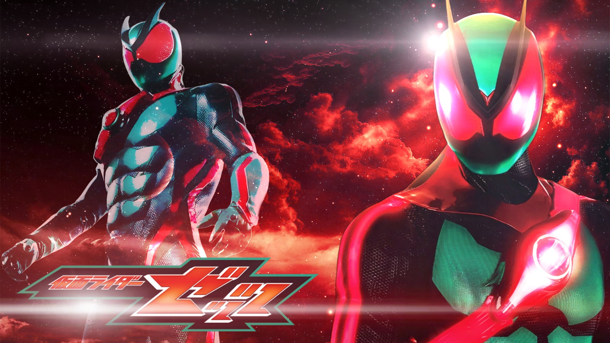

Giới thiệu

Kamen Rider ZEZTZ là một series thuộc thương hiệu Kamen Rider. Câu chuyện theo chân Baku Yorozu, một chàng trai luôn mơ ước trở thành điệp viên. Cậu dành cả đêm mơ về việc phục vụ tổ chức đặc biệt CODE với mật danh Số Bảy. Khi một vận rủi ập đến, Baku vô tình chạm trán với những con quái vật được gọi là Ác Mộng, và cậu được chỉ huy bí ẩn Zero tuyển mộ để trở thành một điệp viên thực thụ của CODE .Cùng với ZEZTZ Driver,một chiếc đai biến hình sử dụng các viên nang năng lượng đặc biệt gọi là "Capsems", Baku biến hình thành Kamen Rider ZEZTZ để chiến đấu với các sinh vật Nightmare và bảo vệ thế giới.
Chủ đề của bộ phim kết hợp giữa hành động, giấc mơ và nhiệm vụ điệp viên. Những trận chiến diễn ra trong cả thế giới thực lẫn không gian của giấc mơ, mang đến nhiều thử thách cho các Kamen Rider.
Thông tin nổi bật
| Hạng mục | Nội dung |
|---|---|
| Nhân vật chính | Baku Yorozu |
| Thiết bị biến thân | ZEZTZ Driver |
| Chủ đề | Giấc mơ - Điệp viên - Hành động |
| Kẻ thù | Nightmare |